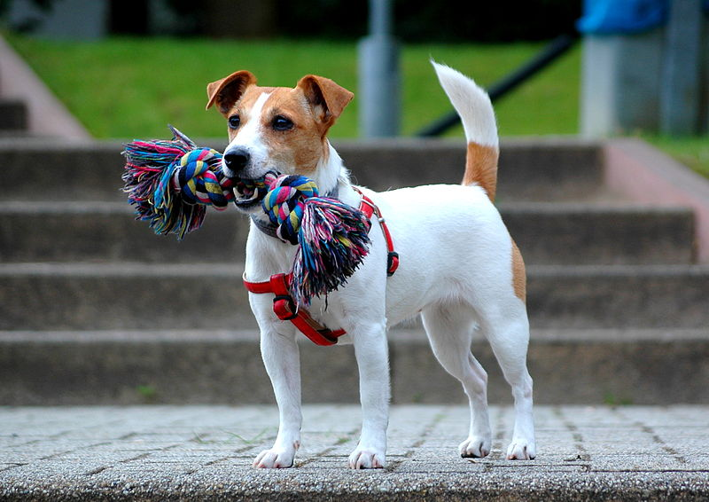

| Jack Russell terrier | |
|---|---|
|  | |
| Kraj patronacki | Wielka Brytania/ Australia |
| Wysokość | 25–30 cm (psy i suki) |
| Masa | 5–6 kg (psy i suki) |
Rasa powstała z angielskiej rasy parson Jack Russell terrier, podzielonej w 2000 r. na dwie osobne rasy: wysokonożnego parsona i niskonożnego jacka. Obie odmiany były kształtowane przez tego samego hodowcę – zapalonego myśliwego, pastora Johna Russella (zwanego Jackiem; ur. 1795, zm. 1883). Suka Trump była dla niego wzorem przyszłej rasy[. Nazwa parson Russell została ustalona przez American Kennel Club (AKC), zaś cała rasa Jack Russell terrier uformowała się już w Australii.
Jack Russell terrier jest psem niewielkich rozmiarów o zwinnej sylwetce średniej wielkości. Ogon jest osadzony wysoko, lędźwie są lekko łukowate. Żuchwa i szczęki tego teriera są mocne, zgryz nożycowy, trufla nosowa czarna, płytki stop, oczy w kształcie migdałów, a uszy – płatków róż i ściśle przylegające do głowy. Skóra jest elastyczna i gruba; ciało nie jest ani delikatne, ani zbyt muskularne. Mierzą od 25 do 30 cm. Odmiana parson Russell terrier jest nieco wyższa od Jack Russell terriera, ze względu na dłuższe nogi (z reguły cięższy o ok. 1–1,5 kg).
Sierść jest dominująco biała z niewielkimi znaczeniami brązowymi, rudobrązowymi lub czarnymi. Czasami większością są brązowe plamy. Znaczone są głowa i nasada ogona. Występują również osobniki całkiem białe. Szata musi być ostra. Ze względu na jej rodzaj występują odmiany:

Umaszczenie krótkowłse

Umaszczenie szorstkowłose
Jack Russell terrier jest psem radosnym, czujnym, bezkompromisowym, lojalnym, aktywnym, inteligentnym[8], skłonnym do nagłej ekscytacji i wykazywania uporu; ma silny instynkt łowiecki. Pierwotnie był jednym z nielicznych terierów, których zadaniem podczas polowania nie było zabicie zwierzyny, lecz jedynie wypłoszenie jej z kryjówki[6]. Należy go wcześnie przyzwyczajać do innych psów, gdyż jako dorosły pies może być wobec nich nieprzyjazny. Łatwo dostosowuje się do nowych sytuacji i odmiennych warunków życia. Podczas pracy na polowaniu charakteryzuje się odwagą oraz wytrwałością. Zadania traktuje jak nowe wyzwania i realizuje je z zapalczywością. Atrakcją jest dla niego pościg za szybko poruszającym się celem, najlepiej małą piłką lub frisbee. Wymaga wiele ruchu, poświęconego czasu i uwagi swojego opiekuna, a także konsekwencji w układaniu i tresurze. Jest psem rodzinnym, lubi zabawy ze starszymi dziećmi[9][10]. Zabawa z małymi dziećmi powinna się odbywać pod kontrolą rodziców, gdyż pies ma skłonności do gwałtownego, szybkiego poruszania się. Jack Russell terriery najczęściej są czujne, lecz nie są nadmiernie szczekliwe: zazwyczaj szczekają gdy wyczuwają zagrożenie lub podczas zabawy. Są bardzo przywiązane do właściciela.
Psy tej rasy są mało wymagające w utrzymaniu i pielęgnacji. Aby zachować psa w dobrej kondycji fizycznej na każde 5 cm wysokości powinien przypadać 1 kg masy ciała, czyli pies o wysokości 25 cm powinien ważyć maksymalnie 5 kg. Jack Russelle są krzepkie i długowieczne; powinny być szczupłe i zwinne. Mogą żyć około 15 lat. Rzadko chorują na choroby genetyczne[12]. Jedną z takich chorób jest zwichnięcie rzepki kolanowej – nieleczona może prowadzić do artretyzmu. Badania wykazały, iż suki są na nią bardziej podatne. Kolejne to choroba Legga-Calvégo-Perthesa, choroba von Willebranda czy głuchota u psów całkowicie białych. Luksacja soczewki może pojawić się w ogólności u terierów w zaawansowanym wieku.
Wykorzystywane jako psy myśliwskie w charakterze norowców pracujących w norach lisów (wypłaszających zwierzę z kryjówki)[13]. W Irlandii często używane są na wsi do tępienia szczurów i pilnowania obejścia. W tym kraju rozgrywane są także co roku zawody jack russelli w łapaniu szczurów w stodołach. Energiczność i wytrwałość, jakimi obdarzone są te psy, pozwala im na uczestnictwo w ćwiczeniach agility.
Jack Russell terrier bardzo dużą popularnością cieszy się w Stanach Zjednoczonych, Wielkiej Brytanii i Australii. Jest dość popularny w Polsce. Najwięcej psów tej rasy można spotkać na zawodach jeździeckich lub w ośrodkach jeździeckich.